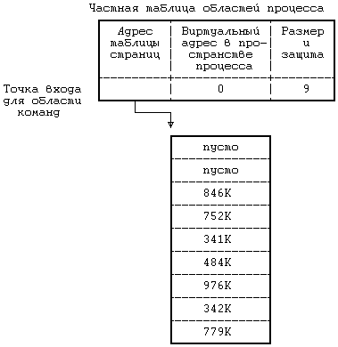
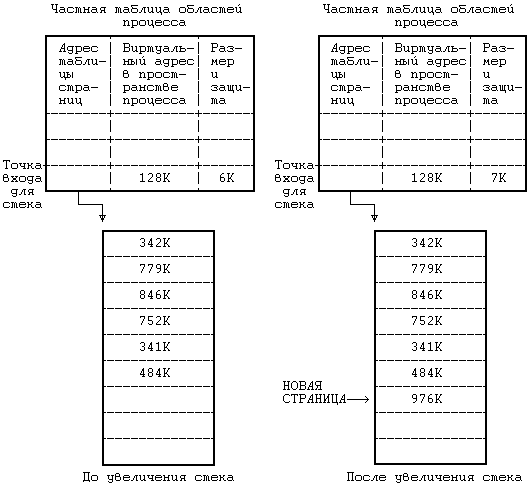
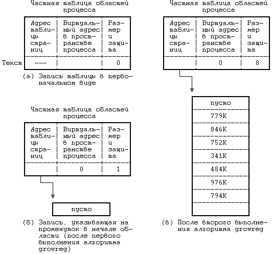
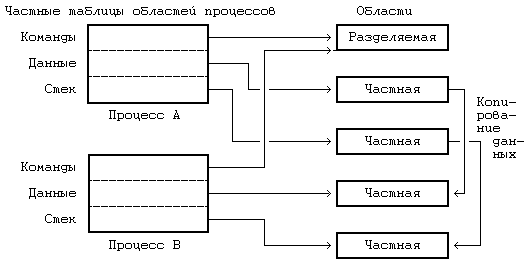

В этой главе мы пока говорили о том, каким образом осуществляется переключение контекста между процессами и как контекстные уровни запоминаются в стеке и выбираются из стека, представляя контекст пользовательского уровня как статический объект, не претерпевающий изменений при восстановлении контекста процесса. Однако, с виртуальным адресным пространством процесса работают различные системные функции и, как будет показано в следующей главе, выполняют при этом операции над областями. В этом разделе рассматривается информационная структура области; системные функции, реализующие операции над областями, будут рассмотрены в следующей главе.
Запись таблицы областей содержит информацию, необходимую для описания области. В частности, она включает в себя следующие поля:
- Указатель на индекс файла, содержимое которого было первоначально загружено в область
- Тип области (область команд, разделяемая память, область частных данных или стека)
- Размер области
- Местоположение области в физической памяти
- Статус (состояние) области, представляющий собой комбинацию из следующих признаков:
- заблокирована
- запрошена
- идет процесс ее загрузки в память
- готова, загружена в память
- Счетчик ссылок, в котором хранится количество процессов, ссылающихся на данную область.
К операциям работы с областями относятся: блокировка области, снятие блокировки с области, выделение области, присоединение области к пространству памяти процесса, изменение размера области, загрузка области из файла в пространство памяти процесса, освобождение области, отсоединение области от пространства памяти процесса и копирование содержимого области. Например, системная функция exec, в которой содержимое исполняемого файла накладывается на адресное пространство задачи, отсоединяет старые области, освобождает их в том случае, если они не являются разделяемыми, выделяет новые области, присоединяет их и загружает содержимым файла. В остальной части раздела операции над областями описываются более детально с ориентацией на модель управления памятью, рассмотренную ранее (с таблицами страниц и группами аппаратных регистров), и с ориентацией на алгоритмы назначения страниц физической памяти и таблиц страниц (глава 9).
Операции блокировки и снятия блокировки для области выполняются независимо от операций выделения и освобождения области, подобно тому, как операции блокирования-разблокирования индекса в файловой системе выполняются независимо от операций назначения-освобождения индекса (алгоритмы iget и iput). Таким образом, ядро может заблокировать и выделить область, а потом снять блокировку, не освобождая области. Точно также, когда ядру понадобится обратиться к выделенной области, оно сможет заблокировать область, чтобы запретить доступ к ней со стороны других процессов, и позднее снять блокировку.
Ядро выделяет новую область (по алгоритму allocreg, Рисунок 6.18) во время выполнения системных функций fork, exec и shmget (получить разделяемую память). Ядро поддерживает таблицу областей, записям которой соответствуют точки входа либо в списке свободных областей, либо в списке активных областей. При выделении записи в таблице областей ядро выбирает из списка свободных областей первую доступную запись, включает ее в список активных областей, блокирует область и делает пометку о ее типе (разделяемая или частная). За некоторым исключением каждый процесс ассоциируется с исполняемым файлом (после того, как была выполнена команда exec), и в алгоритме allocreg поле индекса в записи таблицы областей устанавливается таким образом, чтобы оно указывало на индекс исполняемого файла. Индекс идентифицирует область для ядра, поэтому другие процессы могут при желании разделять область. Ядро увеличивает значение счетчика ссылок на индекс, чтобы помешать другим процессам удалять содержимое файла при выполнении функции unlink, об этом еще будет идти речь в разделе 7.5. Результатом алгоритма allocreg является назначение и блокировка области.
алгоритм allocreg /* разместить информационную структуру
области */
входная информация: (1) указатель индекса
(2) тип области
выходная информация: заблокированная область
{
выбрать область из списка свободных областей;
назначить области тип;
присвоить значение указателю индекса;
если (указатель индекса имеет ненулевое значение)
увеличить значение счетчика ссылок на индекс;
включить область в список активных областей;
возвратить (заблокированную область);
}
|
Рисунок 6.18. Алгоритм выделения области
Ядро присоединяет область к адресному пространству процесса во время выполнения системных функций fork, exec и shmat (алгоритм attachreg, Рисунок 6.19). Область может быть вновь назначаемой или уже существующей, которую процесс будет использовать совместно с другими процессами. Ядро выбирает свободную запись в частной таблице областей процесса, устанавливает в ней поле типа таким образом, чтобы оно указывало на область команд, данных, разделяемую память или область стека, и записывает виртуальный адрес, по которому область будет размещаться в адресном пространстве процесса. Процесс не должен выходить за предел установленного системой ограничения на максимальный виртуальный адрес, а виртуальные адреса новой области не должны пересекаться с адресами существующих уже областей. Например, если система ограничила максимально-допустимое значение виртуального адреса процесса 8 мегабайтами, то привязать область размером 1 мегабайт к виртуальному адресу 7.5M не удастся. Если же присоединение области допустимо, ядро увеличивает значение поля, описывающего размер области процесса в записи таблицы процессов, на величину присоединяемой области, а также увеличивает значение счетчика ссылок на область.
Кроме того, в алгоритме attachreg устанавливаются начальные значения группы регистров управления памятью, выделенных процессу. Если область ранее не присоединялась к какому-либо процессу, ядро с помощью функции growreg (см. следующий раздел) заводит для области новые таблицы страниц; в противном случае используются уже существующие таблицы страниц. Алгоритм завершает работу, возвращая указатель на точку входа в частную таблицу областей процесса, соответствующую вновь присоединенной области. Допустим, например, что ядру нужно подключить к процессу по виртуальному адресу 0 существующую (разделяемую) область, имеющую размер 7 Кбайт (Рисунок 6.20). Оно выделяет новую группу регистров управления памятью и заносит в них адрес таблицы страниц области, виртуальный адрес области в пространстве процесса (0) и размер таблицы страниц (9 записей).
алгоритм attachreg /* присоединение области к процессу */
входная информация: (1) указатель на присоединяемую об-
ласть (заблокированную)
(2) процесс, к которому присоединяется
область
(3) виртуальный адрес внутри процесса,
по которому будет присоединена об-
ласть
(4) тип области
выходная информация: точка входа в частную таблицу областей
процесса
{
выделить новую запись в частной таблице областей про-
цесса;
проинициализировать значения полей записи:
установить указатель на присоединяемую область;
установить тип области;
установить виртуальный адрес области;
проверить правильность указания виртуального адреса и
размера области;
увеличить значение счетчика ссылок на область;
увеличить размер процесса с учетом присоединения облас-
ти;
записать начальные значения в новую группу аппаратных
регистров;
возвратить (точку входа в частную таблицу областей про-
цесса);
}
|
Рисунок 6.19. Алгоритм присоединения области
Процесс может расширять или сужать свое виртуальное адресное пространство с помощью функции sbrk. Точно так же и стек процесса расширяется автоматически (то есть для этого процессу не нужно явно обращаться к определенной функции) в соответствии с глубиной вложенности обращений к подпрограммам. Изменение размера области производится внутри ядра по алгоритму growreg (Рисунок 6.21). При расширении области ядро проверяет, не будут ли виртуальные адреса расширяемой области пересекаться с адресами какой-нибудь другой области и не повлечет ли расширение области за собой выход процесса за пределы максимально-допустимого виртуального пространства памяти. Ядро никогда не использует алгоритм growreg для увеличения размера разделяемой области, уже присоединенной к нескольким процессам; поэтому оно не беспокоится о том, не приведет ли увеличение размера области для одного процесса к превышению другим процессом системного ограничения, накладываемого на размер процесса. При работе с существующей областью ядро использует алгоритм growreg в двух случаях: выполняя функцию sbrk по отношению к области данных процесса и реализуя автоматическое увеличение стека задачи. Обе эти области (данных и стека) частного типа. Области команд и разделяемой памяти после инициализации не могут расширяться. Этот момент будет пояснен в следующей главе.

Рисунок 6.20. Пример присоединения существующей области команд
Чтобы разместить расширенную память, ядро выделяет новые таблицы страниц (или расширяет существующие) или отводит дополнительную физическую память в тех системах, где не поддерживается подкачка страниц по обращению. При выделении дополнительной физической памяти ядро проверяет ее наличие перед выполнением алгоритма growreg; если же памяти больше нет, ядро прибегает к другим средствам увеличения размера области (см. главу 9). Если процесс сокращает размер области, ядро просто освобождает память, отведенную под область. Во всех этих случаях ядро переопределяет размеры процесса и области и переустанавливает значения полей записи частной таблицы областей процесса и регистров управления памятью (так, чтобы они согласовались с новым отображением памяти).
Предположим, например, что область стека процесса начинается с виртуального адреса 128К и имеет размер 6 Кбайт и что ядру нужно расширить эту область на 1 Кбайт (1 страницу). Если размер процесса позволяет это делать и если виртуальные адреса в диапазоне от 134К до 135К - 1 не принадлежат какой-либо области, ранее присоединенной к процессу, ядро увеличивает размер стека. При этом ядро расширяет таблицу страниц, выделяет новую страницу памяти и инициализирует новую запись таблицы. Этот случай проиллюстрирован с помощью Рисунка 6.22.
В системе, где поддерживается подкачка страниц по обращению, ядро может "отображать" файл в адресное пространство процесса во время выполнения функции exec, подготавливая последующее чтение по запросу отдельных физических страниц (см. главу 9). Если же подкачка страниц по обращению не поддерживается, ядру приходится копировать исполняемый файл в память, загружая области процесса по указанным в файле виртуальным адресам. Ядро может присоединить область к разным виртуальным адресам, по которым будет загружаться содержимое файла, создавая таким образом "разрыв" в таблице страниц (вспомним Рисунок 6.20). Эта возможность может пригодиться, например, когда требуется проявлять ошибку памяти (memory fault) в случае обращения пользовательских программ к нулевому адресу (если последнее запрещено). Переменные указатели в программах иногда задаются неверно (отсутствует проверка их значений на равенство 0) и в результате не могут использоваться в качестве указателей адресов. Если страницу с нулевым адресом соответствующим образом защитить, процессы, случайно обратившиеся к этому адресу, натолкнутся на ошибку и будут аварийно завершены, и это ускорит обнаружение подобных ошибок в программах.
алгоритм growreg /* изменение размера области */
входная информация: (1) указатель на точку входа в частной
таблице областей процесса
(2) величина, на которую нужно изме-
нить размер области (может быть
как положительной, так и отрица-
тельной)
выходная информация: отсутствует
{
если (размер области увеличивается)
{
проверить допустимость нового размера области;
выделить вспомогательные таблицы (страниц);
если (в системе не поддерживается замещение страниц
по обращению)
{
выделить дополнительную память;
проинициализировать при необходимости значения
полей в дополнительных таблицах;
}
}
в противном случае /* размер области уменьшается */
{
освободить физическую память;
освободить вспомогательные таблицы;
}
провести в случае необходимости инициализацию других
вспомогательных таблиц;
переустановить значение поля размера в таблице процес-
сов;
}
|
Рисунок 6.21. Алгоритм изменения размера области
При загрузке файла в область алгоритм loadreg (Рисунок 6.23) проверяет разрыв между виртуальным адресом, по которому область присоединяется к процессу, и виртуальным адресом, с которого располагаются данные области, и расширяет область в соответствии с требуемым объемом памяти. Затем область переводится в состояние "загрузки в память", при котором данные для области считываются из файла в память с помощью встроенной модификации алгоритма системной функции read.

Рисунок 6.22. Увеличение области стека на 1 Кбайт
Если ядро загружает область команд, которая может разделяться несколькими процессами, возможна ситуация, когда процесс попытается воспользоваться областью до того, как ее содержимое будет полностью загружено, так как процесс загрузки может приостановиться во время чтения файла. Подробно о том, как это происходит и почему при этом нельзя использовать блокировки, мы поговорим, когда будем вести речь о функции exec в следующей главе и в главе 9. Чтобы устранить эту проблему, ядро проверяет статус области и не разрешает к ней доступ до тех пор, пока загрузка области не будет закончена. По завершении реализации алгоритма loadreg ядро возобновляет выполнение всех процессов, ожидающих окончания загрузки области, и изменяет статус области ("готова, загружена в память").
Предположим, например, что ядру нужно загрузить текст размером 7K в область, присоединенную к процессу по виртуальному адресу 0, но при этом оставить промежуток размером 1 Кбайт от начала области (Рисунок 6.24). К этому времени ядро уже выделило запись в таблице областей и присоединило область по адресу 0 с помощью алгоритмов allocreg и attachreg. Теперь же ядро запускает алгоритм loadreg, в котором действия алгоритма growreg выполняются дважды - во-первых, при выделении в начале области промежутка в 1 Кбайт, и во-вторых, при выделении места для содержимого области - и алгоритм growreg назначает для области таблицу страниц. Затем ядро заносит в соответствующие поля пространства процесса установочные значения для чтения данных из файла: считываются 7 Кбайт, начиная с адреса, указанного в виде смещения внутри файла (параметр алгоритма), и записываются в виртуальное пространство процесса по адресу 1K.
алгоритм loadreg /* загрузка части файла в область */
входная информация: (1) указатель на точку входа в частную
таблицу областей процесса
(2) виртуальный адрес загрузки
(3) указатель индекса файла
(4) смещение в байтах до начала считы-
ваемой части файла
(5) объем загружаемых данных в байтах
выходная информация: отсутствует
{
увеличить размер области до требуемой величины (алгоритм
growreg);
записать статус области как "загружаемой в память";
снять блокировку с области;
установить в пространстве процесса значения параметров
чтения из файла:
виртуальный адрес, по которому будут размещены счи-
тываемые данные;
смещение до начала считываемой части файла;
объем данных, считываемых из файла, в байтах;
загрузить файл в область (встроенная модификация алго-
ритма read);
заблокировать область;
записать статус области как "полностью загруженной в па-
мять";
возобновить выполнение всех процессов, ожидающих оконча-
ния загрузки области;
}
|
Рисунок 6.23. Алгоритм загрузки данных области из файла

Рисунок 6.24. Загрузка области команд (текста)
алгоритм freereg /* освобождение выделенной области */
входная информация: указатель на (заблокированную) область
выходная информация: отсутствует
{
если (счетчик ссылок на область имеет ненулевое значе-
ние)
{
/* область все еще используется одним из процессов */
снять блокировку с области;
если (область ассоциирована с индексом)
снять блокировку с индекса;
возвратить управление;
}
если (область ассоциирована с индексом)
освободить индекс (алгоритм iput);
освободить связанную с областью физическую память;
освободить связанные с областью вспомогательные таблицы;
очистить поля области;
включить область в список свободных областей;
снять блокировку с области;
}
|
Рисунок 6.25. Алгоритм освобождения области
Если область не присоединена уже ни к какому процессу, она может быть освобождена ядром и возвращена в список свободных областей (Рисунок 6.25). Если область связана с индексом, ядро освобождает и индекс с помощью алгоритма iput, учитывая значение счетчика ссылок на индекс, установленное в алгоритме allocreg. Ядро освобождает все связанные с областью физические ресурсы, такие как таблицы страниц и собственно страницы физической памяти. Предположим, например, что ядру нужно освободить область стека, описанную на Рисунке 6.22. Если счетчик ссылок на область имеет нулевое значение, ядро освободит 7 страниц физической памяти вместе с таблицей страниц.
алгоритм detachreg /* отсоединить область от процесса */
входная информация: указатель на точку входа в частной
таблице областей процесса
выходная информация: отсутствует
{
обратиться к вспомогательным таблицам процесса, имеющим
отношение к распределению памяти,
освободить те из них, которые связаны с областью;
уменьшить размер процесса;
уменьшить значение счетчика ссылок на область;
если (значение счетчика стало нулевым и область не явля-
ется неотъемлемой частью процесса)
освободить область (алгоритм freereg);
в противном случае /* либо значение счетчика отлично
от 0, либо область является не-
отъемлемой частью процесса */
{
снять блокировку с индекса (ассоциированного с об-
ластью);
снять блокировку с области;
}
}
|
Рисунок 6.26. Алгоритм отсоединения области
Ядро отсоединяет области при выполнении системных функций exec, exit и shmdt (отсоединить разделяемую память). При этом ядро корректирует соответствующую запись и разъединяет связь с физической памятью, делая недействительными связанные с областью регистры управления памятью (алгоритм detachreg, Рисунок 6.26). Механизм преобразования адресов после этого будет относиться уже к процессу, а не к области (как в алгоритме freereg). Ядро уменьшает значение счетчика ссылок на область и значение поля, описывающего размер процесса в записи таблицы процессов, в соответствии с размером области. Если значение счетчика становится равным 0 и если нет причины оставлять область без изменений (область не является областью разделяемой памяти или областью команд с признаками неотъемлемой части процесса, о чем будет идти речь в разделе 7.5), ядро освобождает область по алгоритму freereg. В противном случае ядро снимает с индекса и с области блокировку, установленную для того, чтобы предотвратить конкуренцию между параллельно выполняющимися процессами (см. раздел 7.5), но оставляет область и ее ресурсы без изменений.

Рисунок 6.27. Копирование содержимого области
алгоритм dupreg /* копирование содержимого существующей
области */
входная информация: указатель на точку входа в таблице об-
ластей
выходная информация: указатель на область, являющуюся точ-
ной копией существующей области
{
если (область разделяемая)
/* в вызывающей программе счетчик ссылок на об-
ласть будет увеличен, после чего будет испол-
нен алгоритм attachreg */
возвратить (указатель на исходную область);
выделить новую область (алгоритм allocreg);
установить значения вспомогательных структур управления
памятью в точном соответствии со значениями существую-
щих структур исходной области;
выделить для содержимого области физическую память;
"скопировать" содержимое исходной области во вновь соз-
данную область;
возвратить (указатель на выделенную область);
}
|
Рисунок 6.28. Алгоритм копирования содержимого существующей области
Системная функция fork требует, чтобы ядро скопировало содержимое областей процесса. Если же область разделяемая (разделяемый текст команд или разделяемая память), ядру нет надобности копировать область физически; вместо этого оно увеличивает значение счетчика ссылок на область, позволяя родительскому и порожденному процессам использовать область совместно. Если область не является разделяемой и ядру нужно физически копировать ее содержимое, оно выделяет новую запись в таблице областей, новую таблицу страниц и отводит под создаваемую область физическую память. В качестве примера рассмотрим Рисунок 6.27, где процесс A порождает с помощью функции fork процесс B и копирует области родительского процесса. Область команд процесса A является разделяемой, поэтому процесс B может использовать эту область совместно с процессом A. Однако области данных и стека родительского процесса являются его личной принадлежностью (имеют частный тип), поэтому процессу B нужно скопировать их содержимое во вновь выделенные области. При этом даже для областей частного типа физическое копирование области не всегда необходимо, в чем мы убедимся позже (глава 9). На Рисунке 6.28 приведен алгоритм копирования содержимого области (dupreg).
Предыдущая глава || Оглавление || Следующая глава